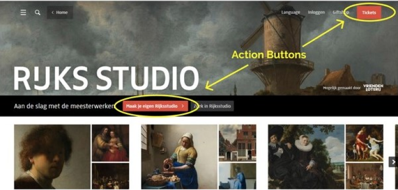

User Data Analysis
In this project, my colleagues and i conducted user trials and
interviews to evaluate the user experience of the rijksstudio
website.
The raw data obtained was subsequently analysed via user action
overviews and user action color coding and action mapping.
We then propose design solutions based on the data gathered.
